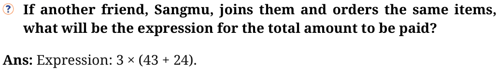
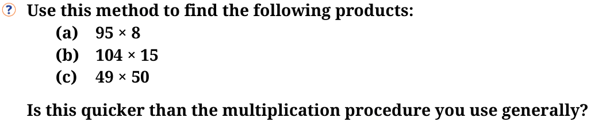

- 1.Fill in the blanks with numbers, and boxes with operation signs such
that the expressions on both sides are equal.
- (a)\(24 + (6 - 4) = 24 + 6\) _________
- (b)\(38 +\) (_________ ________) \(= 38 + 9 - 4\)
- (c)\(24 - (6 + 4) = 24 6 - 4\)
- (d)\(24 - 6 - 4 = 24 - 6\) _________
- (e)\(27 - (8 + 3) = 27\) _________ 8 _________ 3
- (f)\(27 -\) (_________ ________) \(= 27 - 8 + 3\)
Ans:
- (a)\(24 + (6 - 4) = 24 + 6 4\)
- (b)\(38 + (9 4) = 38 + 9 - 4\)
- (c)\(24 - (6 + 4) = 24 6 - 4\)
- (d)\(24 - 6 - 4 = 24 - 6 4\)
- (e)\(27 - (8 + 3) = 27 - 8 - 3\)
- (f)\(27 - (8 3) = 27 - 8 + 3\)
- 2.Remove the brackets and write the expression having the same
value.
- (a)\(14 + (12 + 10)\)
- (b)\(14 - (12 + 10)\)
- (c)\(14 + (12 - 10)\)
- (d)\(14 - (12 - 10)\)
- (e)\(- 14 + 12 - 10\)
- (f)\(14 -\) ( \(- 12 - 10)\)
Ans: (a) and (f)
- 3.Find the values of the following expressions. For each pair, first try
to guess whether they have the same value. When are the two expressions equal?
- (a)\((6 + 10) - 2\) and \(6 + (10 - 2)\)
- (b)\(16 - (8 - 3)\) and \((16 - 8) - 3\)
- (c)\(27 - (18 + 4)\) and \(27 +\) ( \(- 18 - 4)\)
Ans:
- (a)\((6 + 10) - 2 = 6 + 10 - 2 = 14\)
\(6 + (10 - 2) = 6 + 10 - 2 = 14\) So, \((6 + 10) - 2 = 6 + (10 - 2)\)
- (b)\(16 - (8 - 3)\) and \((16 - 8) - 3\)
\(16 - (8 - 3) = 16 - 8 + 3 = 11 (16 - 8) - 3 = 16 - 8 - 3 = 5\) So, \(16 - (8 - 3) \ne (16 - 8) - 3\)
- (c)\(27 - (18 + 4)\) and \(27 +\) ( \(- 18 - 4)\)
\(27 - (18 + 4) = 27 - 18 - 4 = 5 27 +\) ( \(- 18 - 4) = 27 - 18 - 4 = 5\) So, \(27 - (18 + 4) = 27 +\) ( \(- 18 - 4)\)
- 4.In each of the sets of expressions below, identify those that have the
same value. Do not evaluate them, but rather use your understanding of terms.
\((a)319 + 537\), \(319 - 537\), \(- 537 + 319\), \(537 - 319 (b)87 + 46 - 109\), \(87 + 46 - 109\), \(87 + 46 - 109\), \(87 - 46 + 109\), \(87 - (46 + 109)\), \((87 - 46) + 109\)
Ans:
- (a)\(319 - 537\) and \(- 537 + 319\) have the same terms So, \(319 - 537\) and -
\(537 + 319\) have the same value.
- (b)\(87 + 46 - 109\), \(87 + 46 - 109\), \(87 + 46 - 109\) and also, \(87 - 46 + 109\) and
\((87 - 46) + 109\) have the same terms and so have equal values.
- 5.Add brackets at appropriate places in the expressions such that they
lead to the values indicated.
- (a)\(34 - 9 + 12 = 13\)
- (b)\(56 - 14 - 8 = 34\)
- (c)\(- 22 - 12 - 10 + 22 = - 22\)
Ans:
- (a)\(34 - (9 + 12) = 34 - 21 = 13\)
- (b)\((56 - 14) - 8 = 42 - 8 = 34\)
- (c)\(- 22 - (12 + 10) + 22 = - 22 - 22 + 22 = - 22\)
- 6.Using only reasoning of how terms change their values, fill the
blanks to make the expressions on either side of the equality (=) equal.
- (a)\(423 +\) ________ \(= 419 +\) ________
- (b)\(207 - 68 = 210 -\) ________
Ans:
- (a)\(423 + 419 = 419 + 423\) (Commutative Property)
- (b)\(207 - 68 = 207 + 3 - 3 - 68 = 207 + 3 - (3 + 68) = 210 - 71\) (Associative
Property)
- 7.Using the numbers 2, 3, and 5, and the operators ‘+’ and ‘ - ‘, and
brackets, as necessary, generate expressions to give as many different values as possible.
For example, \(2 - 3 + 5 = 4\) and \(3 - (5 - 2) = 0\)
Ans: Some of the expressions are
- 1.\(3 - 2 - 5 = - 4\)
- 2.\(5 + 2 + 3 = 10\)
- 3.\(5 + 2 - 3 = 4\)
- 4.\(2 - (3 + 5) = - 6\)
Form more expressions.
- 8.Whenever Jasoda has to subtract 9 from a number, she subtracts 10
and adds 1 to it. For example, \(36 - 9 = 26 + 1\)
- (a)Do you think she always gets the correct answer? Why?
- (b)Can you think of other similar strategies? Give some examples.
Ans:
- (a)Yes
\(36 - 9 = 36 - (10 - 1) = 36 - 10 + 1 = 26 + 1\)
- (b)Yes
To subtract 8: Subtract 10 and add 2 (since \(- 8 = - 10 + 2)\).
Ex: \(55 - 8 = 55 - (10 - 2) = 55 - 10 + 2\)
More such strategies can be thought of.
- 9.Consider the two expressions:
- (a)\(73 - 14 + 1\)
- (b)\(73 - 14 - 1\)
For each of these expressions, identify the expressions from the following collection that are equal to it.
- (a)\(73 - (14 + 1)\)
- (b)\(73 - (14 - 1)\)
- (c)\(73 +\) ( \(- 14 + 1)\)
- (d)\(73 +\) ( \(- 14 - 1)\)
Ans: Expressions (b) and (c) are equal to the expression \(73 - 14 + 1\), and expressions (a) and (d) are equal to the expression \(73 - 14 - 1\).
Page No. 39

Page No. 40
\(5 \times 4 + 3 \ne 5 \times (4 + 3)\). Can you explain why? Ans:
\(5 \times 4 + 3 = (5 \times 4) + 3 = 23\). \(5 \times (4 + 3) = 5 \times 7 = 35\) So, \(5 \times 4 + 3 \ne 5 \times (4 + 3)\)
Is \(5 \times (4 + 3) = 5 \times (3 + 4) = (3 + 4) \times 5\)?
Ans: Yes, all three expressions are equal.
Page No. 41

Ans: (a)
\(95 \times 8 = (100 - 5) \times 8 = 100 \times 8 - 5 \times 8 = 800 - 40 = 760\)
\(104 \times 15 = (100 + 4) \times 15 = 100 \times 15 + 4 \times 15\)
Try further.
\(49 \times 50 = (50 - 1) \times 50 = 50 \times 50 - 50 \times 1\)
Try further. Yes, this procedure is quicker than the multiplication procedure we generally use.
Which other products might be quicker to find, like the ones above?
Ans:
This method is useful when one of the numbers is close to a multiple of 10, 50, 100, 1000, etc. For example:
\(98 \times 7 = (100 - 2) \times 7\) ; \(103 \times 9 = (100 + 3) \times 9 49 \times 5 = (50 - 1) \times 5\)
Find some more!
Page No. \(41 - 42\) Figure it Out
- 1.Fill in the blanks with numbers and boxes by signs, so that the
expressions on both sides are equal.
(а) \(3 \times (6 + 7) = 3 \times 6 + 3 \times 7\)
- (b)\((8 + 3) \times 4 = 8 \times 4 + 3 \times 4\)
- (c)\(3 \times (5 + 8) = 3 \times 5 3 \times\) ________
- (d)\((9 + 2) \times 4 = 9 \times 4 2 \times\) ________
- (e)\(3 \times\) ( ________ \(+ 4) = 3\) ________ + ________
- (f)(________ \(+ 6) \times 4 = 13 \times 4 +\) ________
- (g)\(3 \times\) (________ + ________) \(= 3 \times 5 + 3 \times 2\)
- (h)(________ + ________) \(\times\) ________ \(= 2 \times 4 + 3 \times 4\)